User Guide
Overview
EinkBro is a browser specifically designed for E-Ink devices. As E-Ink screens have gotten faster and more capable, more people are browsing the web on e-readers. But mainstream browsers are full of animations, dimming effects, and UI patterns that look terrible on E-Ink displays.
EinkBro follows two core design principles:
- Minimize repaint counts — fewer screen refreshes means a smoother experience
- Minimize repaint area — smaller updates reduce ghosting artifacts
The result is a browser with high-contrast icons, no animations, and features like page-turning by touch areas, volume keys, reader mode, vertical text layout, and AI-powered content interaction.
First Launch
When you first open EinkBro, you'll see a bottom toolbar with configurable action icons. The default layout includes:
- Phone: New Tab, Touch, Reader Mode, Refresh, Back, Bookmark, Tab Count, Input URL, Settings
- Tablet: Title, New Tab, Touch, Reader Mode, Refresh, Back, Bookmark, Tab Count, Settings
Tap the Settings icon (hamburger menu) to open the Action Menu, which gives access to all browser functions.
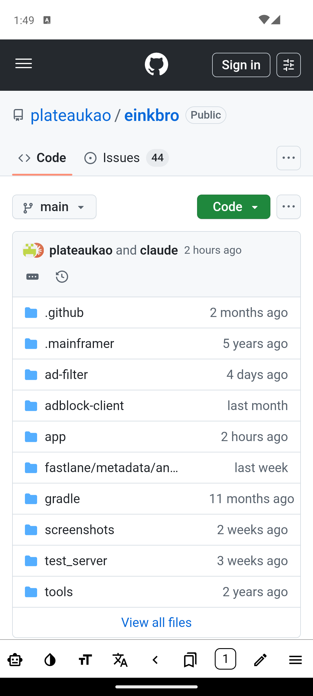
Toolbar Actions
EinkBro has over 40 toolbar actions. You can add any of them to your toolbar and reorder them freely. Below is the complete reference.
| Icon | Action | Click | Long Click |
|---|---|---|---|
| info | Title | Edit current URL; type keyword to search | — |
| arrow_back | Back | Go to previous page | Show recent 5 web histories |
| Refresh | Reload current page (shows Stop icon while loading) | Enter fullscreen | |
| Touch Turn Page | Toggle touch page-turning | Show touch configuration dialog | |
| upload | Page Up | Scroll up by one page | Scroll to top |
| download | Page Down | Scroll down by one page | Scroll to bottom |
| looks_one | Tab Count | Show tab list | Enable incognito mode |
| format_size | Font Size | Show font size dialog | Enter reader mode |
| menu | Settings (Menu) | Show action menu | Show quick access dialog |
| bookmarks | Bookmarks | Show bookmarks | Add current URL to bookmarks |
| straighten | Toolbar Setting | Open toolbar configuration | — |
| view_column | Vertical Layout | Toggle vertical reading mode | — |
| chrome_reader_mode | Reader Mode | Toggle reader mode | — |
| Bold Font | Toggle bold font style | — | |
| text_increase | Increase Font | Increase font size by 10% | — |
| text_decrease | Decrease Font | Decrease font size by 10% | — |
| fullscreen | Fullscreen | Enter fullscreen mode | — |
| arrow_forward | Forward | Go to next page | — |
| rotate_right | Rotate Screen | Rotate screen orientation | — |
| translate | Translation | Translate current page | Show different translate modes |
| cancel_presentation | Close Tab | Close current tab | — |
| edit | Input URL | Show pen icon to edit URL (no web title) | — |
| library_add | New Tab | Create a new tab | — |
| Desktop Mode | Toggle desktop user agent | — | |
| toc | TOC | Show table of contents (EPUB/reader) | — |
| search | Search | Search text on current page | — |
| folder_copy | Duplicate Tab | Duplicate current tab | — |
| record_voice_over | TTS (Read Aloud) | Read web content aloud | — |
| Page Info | Show page position / page count | — | |
| g_translate | Google In-Place | Google Translate in-place | — |
| segment | Translate by Paragraph | Inline paragraph-by-paragraph translation | — |
| minimize | Move to Background | Move browser to background | — |
| swipe_vertical | Touch Direction Up/Down | Toggle touch area direction (up/down) | — |
| swipe | Touch Direction Left/Right | Toggle touch area direction (left/right) | — |
| schedule | Time | Show current time on toolbar | — |
| space_bar | Spacer | Flexible space between icons | — |
| share | Share Link | Share current page link | — |
| article | Save EPUB | Save/open EPUB dialog | — |
| invert_colors | Invert Color | Invert page colors | — |
| chat | Chat With Web | Open AI chat about current page | — |
| Page AI | Run AI actions on full page content | — | |
| Audio Only | Hide video, keep audio and captions | — |
Toolbar Customization
Open Action Menu → Toolbar icons (or add the Toolbar Setting button to your toolbar). Check any item to add it to the toolbar. Drag the handle on the right side to reorder items.

The toolbar position can be set to Bottom, Top, Left, or Right in Settings → Toolbar.
Settings: UI
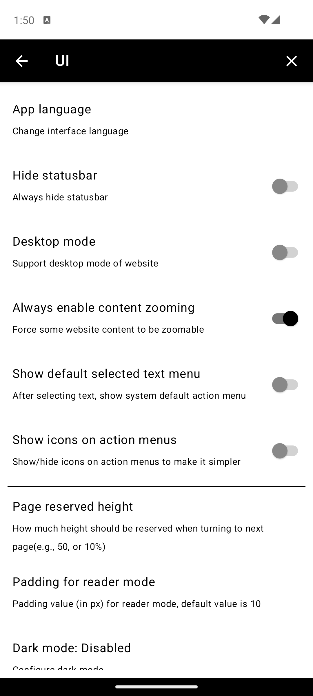
80.10.Follow system, Force On, Disabled. Default: Follow system.Off, 10%, 30%, 50%, 70%, 100%. Default: Off.Right, Left, Center, Don't show, Custom. Default: Right.Start input URL, Show homepage, Show bookmarks. Default: Start input URL.Settings: Toolbar
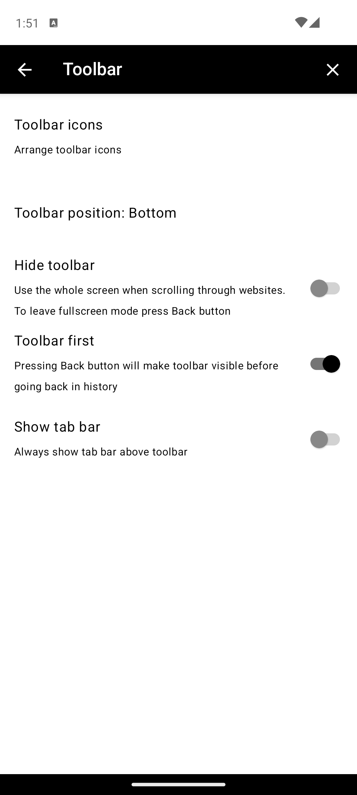
Bottom, Top, Left, Right. Default: Bottom.Settings: Behavior
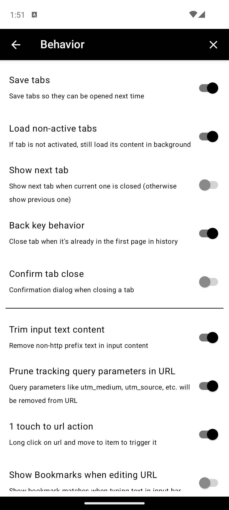
Tab Management
URL & Navigation
utm_* and other tracking params from URLs. Default: off.Video
Input & Controls
Display & Rendering
Security & Network
Settings: Gestures
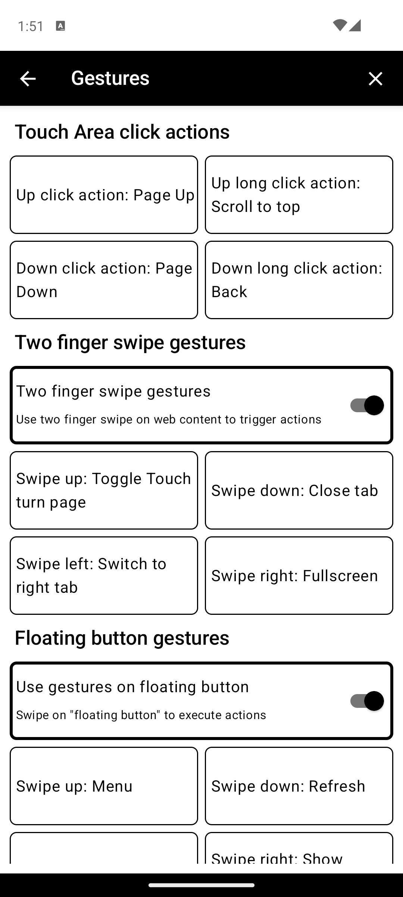
Touch Area Click Actions
Configure what happens when you tap or long-press the touch page-turning areas. Each can be set to: Page Up, Page Down, Scroll Up, Scroll Down, Scroll to Top, Scroll to Bottom, Overview, and more.
Two Finger Swipe Gestures
Floating Button Gestures
Settings: Backup
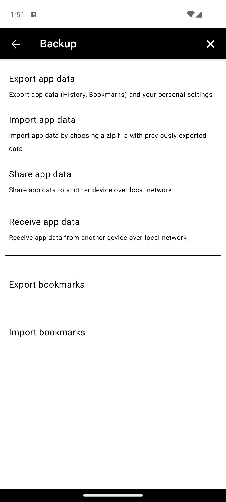
Settings: Start Control
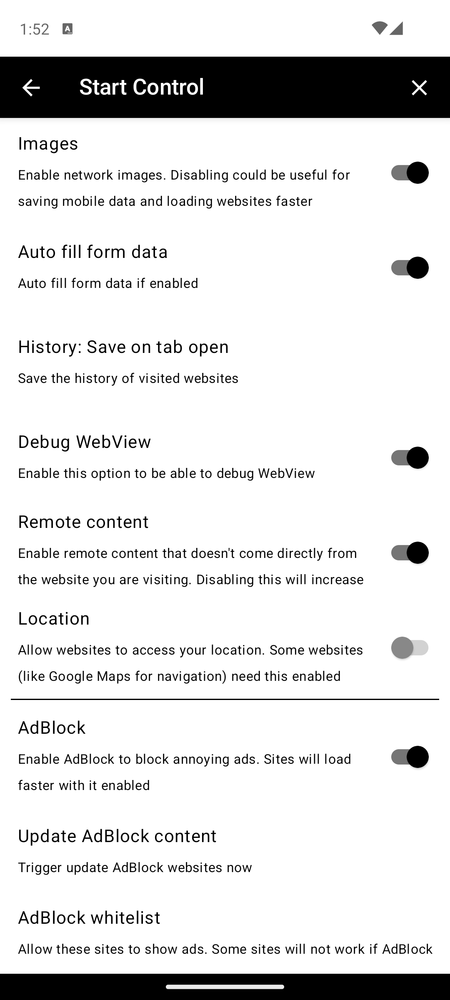
Save when opening, Save when closing, Disabled. Default: Save when opening.AdBlock
JavaScript
Cookies
Settings: Data Control
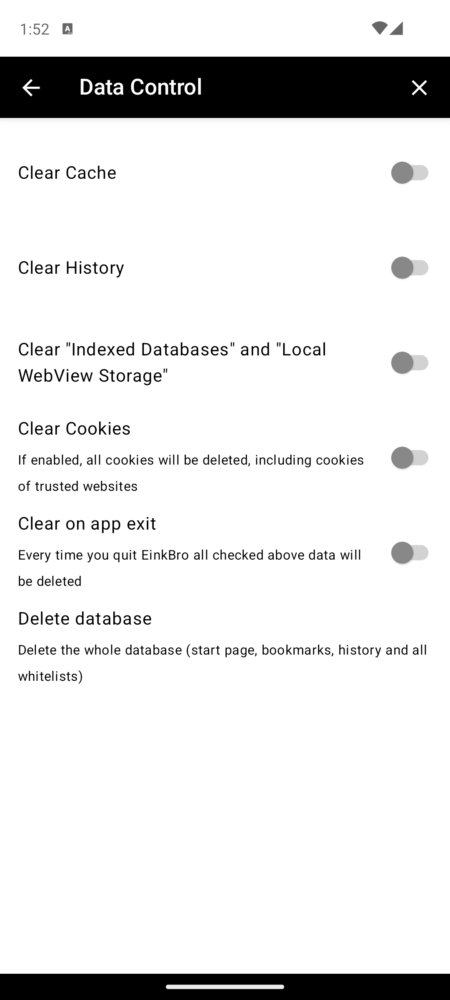
Settings: Search
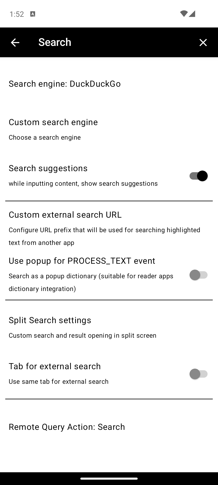
Google, Bing, DuckDuckGo, Startpage, Startpage (de), Baidu, Searx, Qwant, Ecosia, Yandex.%s placeholder. Default: https://www.google.com/search?q=%s.Settings: Misc
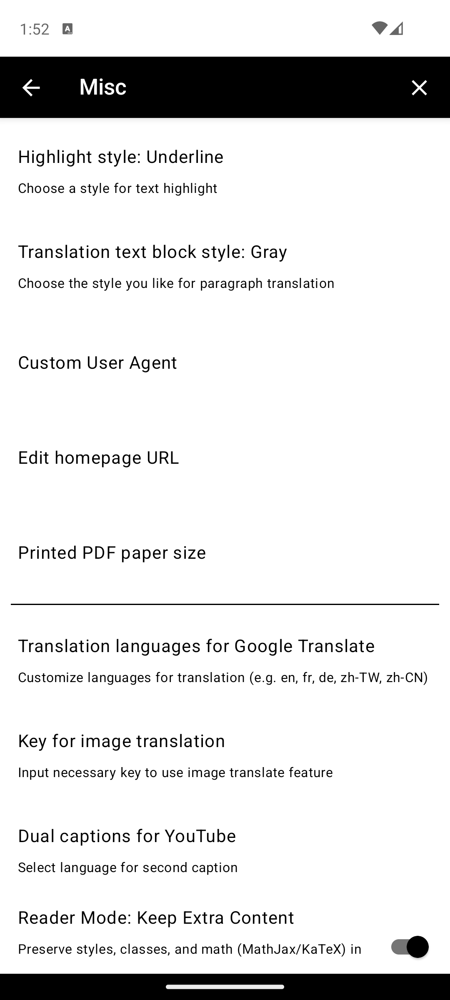
en, fr, de, zh-TW, zh-CN).Settings: GPT
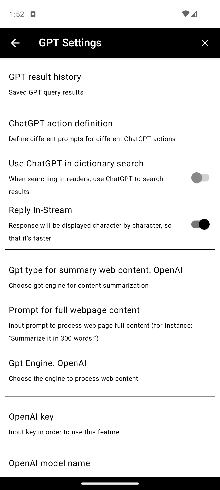
General
Web Content Processing
Default, OpenAI, Self-hosted, Google Gemini.Summarize in 50 words:.OpenAI
gpt-4.1. Can use other OpenAI models.tts-1 (default), tts-1-hd, gpt-4o-mini-tts.gpt-4o-mini-tts model.OpenAI Compatible Server
https://api.openai.com.Google Gemini
gemini-2.5-flash.Reader Mode
Reader mode strips away headers, sidebars, footers, and ads, leaving only the main article content. It's ideal for long-form reading on E-Ink screens.
- Activate via Reader Mode toolbar button or Action Menu → Reader mode
- Long-press the Font Size toolbar button also enters reader mode
- Customize padding in Settings → UI → Padding for Reader Mode
- Enable Keep Extra Content in Settings → Misc to preserve math notation (MathJax/KaTeX) and styling
- Reader mode has its own toolbar configuration with: Rotate, Fullscreen, Bold Font, Font Size, Touch, TOC, Page Info, Settings, Close Tab
Split Screen
Split screen opens a second web panel alongside the current page. Useful for reading news lists while viewing articles, or for AI chat alongside content.
- Activate via Action Menu → Split screen or long-press any link
- The split panel has its own mini toolbar (top to bottom):
- Orientation — Toggle vertical/horizontal split. Long-click flips the two screens.
- Dual screen link — When enabled, clicking links in main panel opens in the second panel
- Scroll sync — Synchronize scrolling between panels (useful for translation comparison)
- Font size +/− — Adjust font in the split panel
- Close — Close split screen
Translation
EinkBro offers multiple translation methods:
Paragraph-by-Paragraph Translation
Translates each paragraph inline, showing the translation alongside the original text. Activate via the Translate by Paragraph toolbar action or long-press the Translate button for mode selection. Providers: Google Translate, DeepL, OpenAI, Gemini.
Full Page Translation
Translates the entire page via Google Translate. Activate via Action Menu → Translate or the Translation toolbar button.
Image Translation
Translates text within images. Results are cached to disk for faster subsequent access. Long-click the translate icon to batch-translate all remaining images. Requires an API key configured in Settings → Misc → Translate Image API Key.
Dual Captions
Display subtitles in two languages on YouTube videos. Configure in Settings → Misc → Dual Captions for YouTube.

EPUB Export
Save web articles as EPUB ebook files, complete with images and table of contents.
- Activate via Action Menu → EPUB
- The dialog has tabs for opening existing EPUBs and saving new ones
- Save multiple web pages into the same EPUB — each becomes a chapter
- Drag and drop to reorder chapters in the TOC editor
- EPUB files include an EinkBro identifier for easy identification
- Content must be reader-mode compatible for best results
Touch Page Turning
EinkBro's signature feature for E-Ink devices. Tap the left or right (or top/bottom) edges of the screen to page up/down, just like turning pages in an e-book.
- Enable via the Touch Turn Page toolbar button
- Configure touch areas and actions in Settings → Gestures
- Choose between left/right or up/down touch area layout
- Long-press volume key temporarily disables page turning for 5 seconds
- Volume keys can also be used for page turning (enable in Quick Toggle)
- Adjust Page Reserved Height in Settings → UI to control overlap between pages

AI / ChatGPT Integration
Interact with web content using AI directly in the browser.
Chat With Web
Open a split-screen AI chat panel to ask questions about the current page. Activate via the Chat With Web toolbar button or Action Menu → Chat With Web.
Page AI
Run AI actions on the full page content (e.g., summarize, extract key points). Uses the prompt configured in Settings → GPT → Prompt for Full Webpage Content.
Custom GPT Actions
Define reusable AI actions with custom system prompts in Settings → GPT → ChatGPT Action Definition. These appear in the text selection context menu and can be triggered on selected text or full page content.
Supported Providers
- OpenAI — GPT-4.1 and other models via API key
- Google Gemini — Gemini 2.5 Flash and others
- Self-hosted / Ollama — Any OpenAI-compatible server via custom host URL